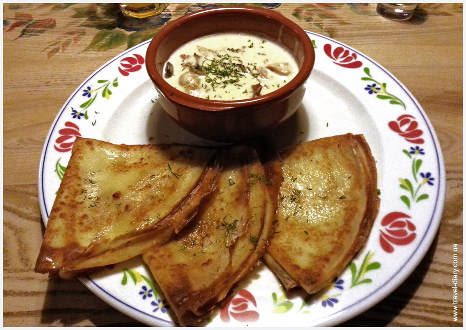

|
Draniki
Draniki is the most popular national dish in Belarus.
The composition of the classic potato pancakes included:
tattered potatoes, that is, shabby on a fine grater, salt and lard for frying.
Note that flour, onions and eggs were not originally added.
The starch contained in the potatoes served as a bonding ingredient.
Potato pancakes are served hot in pots or on a plate with sour cream or
various sauces.
Potatoes 5 pieces
Onion 1/2 pieces
Chicken egg 1 piece
Wheat flour 2 tablespoons
Ground black pepper to taste
Salt to taste
Vegetable oil to taste
|
|
|
Kolduny
In ancient times, kolduny made from dough based on flour, eggs, onion juice and salt.
This is considered a classic recipe for sorcerers.
Nowadays, sorcerers often cook on the basis of potato dough.
Outwardly, they a little resemble potato pancakes only thicker due to the filling.
It can be very different for sorcerers.
Minced meat500 g
Potatoes 10 pieces
Chicken egg 2 pieces
Salt to taste
Ground black pepper to taste
Wheat flour 1/2 cup
Vegetable oil 1 cup
|
|
|
Potato head
National Belarusian dish based on potatoes.
The bulba is grated, fried bacon (cracklings), meat and onions are added.
After that, salt, pepper, add sour cream for tenderness and send to the oven.
Serve hot potato with milk or sour cream.
Brisket - 300 gr.
Potatoes - 1.5 kg.
Bulb onions - 2 pcs.
Sour cream - 0.5 tbsp.
Wheat flour - 1 tbsp.
Salt - 9 gr.
|
|

|
Machanka
This is a hearty and tasty dish, which is a thick gravy
with different types of meat. The classic mochanka includes:
pork ribs, homemade sausage, smoked meat (brisket) and bacon.
300 g homemade pork sausage
rib plate for 7-8 ribs
40 g dry mushrooms
2 large onions
3 tbsp with a heap of flour
salt to taste
ground black pepper to taste
1 bay leaf
vegetable oil for frying
|
|
|
Vereshchak
The composition of the Vereshchak resembles Mochanka.
It includes pork ribs (fresh and smoked), pork sausage, porcini mushrooms,
carrots, celery, onions. The meat is stewed in a skillet, salt, pepper,
juniper seeds are added. Vegetables are sautéed. A sauce is prepared
on the basis of meat broth, adding flour and herbs to it. Vereshchaka
is served with pancakes or pancakes.
hand-stuffed sausages;
chicken;
lard, ham;
hunting sausages;
vegetables;
greens and dried mushrooms.
|